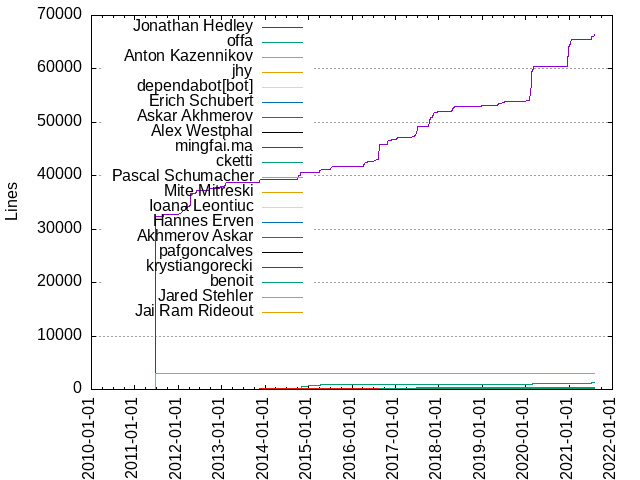
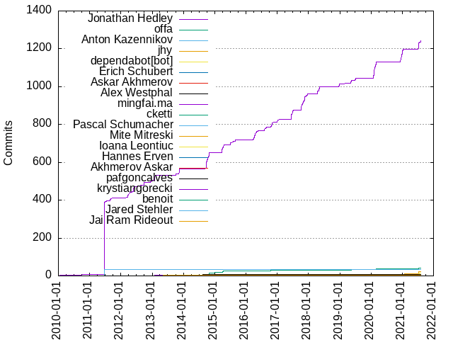

Authors
| Author | Commits (%) | + lines | - lines | First commit | Last commit | Age | Active days | # by commits |
|---|
| Jonathan Hedley | 1241 (81.64%) | 66369 | 36632 | 2009-12-19 | 2021-08-05 | 4247 days, 8:12:27 | 352 | 1 |
| offa | 42 (2.76%) | 1235 | 647 | 2014-10-17 | 2021-07-16 | 2463 days, 5:18:16 | 25 | 2 |
| Anton Kazennikov | 34 (2.24%) | 2902 | 649 | 2011-01-07 | 2011-01-16 | 9 days, 1:08:27 | 7 | 3 |
| jhy | 21 (1.38%) | 378 | 107 | 2019-05-16 | 2021-07-12 | 788 days, 5:32:46 | 12 | 4 |
| dependabot[bot] | 14 (0.92%) | 15 | 15 | 2020-12-10 | 2021-07-16 | 217 days, 21:33:12 | 5 | 5 |
| Erich Schubert | 9 (0.59%) | 311 | 20 | 2016-04-19 | 2017-10-08 | 536 days, 19:44:40 | 6 | 6 |
| Askar Akhmerov | 9 (0.59%) | 111 | 43 | 2014-02-11 | 2014-10-27 | 257 days, 18:42:45 | 4 | 7 |
| Alex Westphal | 7 (0.46%) | 166 | 3 | 2014-08-13 | 2014-08-13 | 16:41:58 | 1 | 8 |
| mingfai.ma | 5 (0.33%) | 78 | 42 | 2013-01-26 | 2013-01-27 | 21:33:13 | 2 | 9 |
| cketti | 5 (0.33%) | 286 | 78 | 2017-01-30 | 2017-06-25 | 145 days, 11:11:33 | 3 | 10 |
| Pascal Schumacher | 4 (0.26%) | 10 | 12 | 2020-02-06 | 2021-07-10 | 519 days, 11:11:12 | 2 | 11 |
| Mite Mitreski | 4 (0.26%) | 11 | 18 | 2014-12-26 | 2014-12-27 | 1:00:21 | 2 | 12 |
| Ioana Leontiuc | 4 (0.26%) | 44 | 2 | 2017-10-08 | 2017-10-08 | 0:03:14 | 1 | 13 |
| Hannes Erven | 4 (0.26%) | 51 | 10 | 2014-10-18 | 2020-12-10 | 2244 days, 13:15:17 | 2 | 14 |
| Akhmerov Askar | 4 (0.26%) | 114 | 5 | 2013-07-05 | 2013-11-11 | 128 days, 22:02:49 | 3 | 15 |
| pafgoncalves | 3 (0.20%) | 77 | 1 | 2015-05-03 | 2015-05-03 | 0:07:53 | 1 | 16 |
| krystiangorecki | 3 (0.20%) | 49 | 9 | 2017-11-04 | 2020-02-02 | 819 days, 9:38:24 | 3 | 17 |
| benoit | 3 (0.20%) | 166 | 7 | 2016-08-23 | 2016-08-24 | 17:29:51 | 2 | 18 |
| Jared Stehler | 3 (0.20%) | 5 | 5 | 2015-03-17 | 2015-06-17 | 92 days, 0:49:13 | 2 | 19 |
| Jai Ram Rideout | 3 (0.20%) | 38 | 2 | 2013-02-09 | 2013-06-02 | 113 days, 19:39:10 | 3 | 20 |
These didn't make it to the top: xiaojian cai, pipiZ, Yohei Kishimoto, Travis Wellman, Tim Burke, Serdar Kuzucu, Michael Schmid, Leif Åstrand, Hulmes, zhujiajun, yihua.huang, yawkat, tomjohan, nirro01, mboisvert, kguelzau, kalaider, ja-fra, hichris1234, hatsuyuki, fabse, danglotb, damonwong93, cromoteca, boomkap, baodn, andyphillips404, amferraz, Zohar Kelrich, VEINHORN, Unknown, TzeKei Lee, Tommy Chheng, Tamas Kovacs, Summers, Ian M. (S&T-Student), Simon Reinhardt, Siedlerchr, Sebastian Kürten, Sebastian, Sean Sullivan, Ryderxxx, Ryan Conway, Olek Janiszewski, OKA133, Nick Kaijaks, Nathanael Yang, Naoki Takezoe, Michel Petrovic, Michael J. Simons, MazzeX28, Maxim Ermilov, Matthew L Daniel, Marko Kaznovac, Marconi Lanna, Luciano Vernaschi, LogDigger, Linker Lin, Lex Spoon, Leos Literak, Klaus Reimer, Ken Geis, Julio, John Robinson, Jiri Pejchal, Jesse Piascik, Jerome Kowalczyk, Jason Toffaletti, Igor Shults, Igor Polevoy, Hyun-Seok Oh, Himanshu Garg, Eric Peters, Enrico Bacis, Elshad Kasumov, Eivind Uggedal, David Ehrmann, Csaba Varga, Colorize, Clément Denis, Christian Schneider (X200), Carl Dea, Brandon Beck, Badhri Sampath, Arnaud Pflieger, Andreas Heiduk, Anders Eriksson, Alon Cohen, Alexander Schwartz, Akira Ueda
Only top 20 authors shown
Only top 20 authors shown
| Month | Author | Commits (%) | Next top 5 | Number of authors |
|---|
| 2021-08 | Jonathan Hedley | 6 (100.00% of 6) | | 1 |
| 2021-07 | Jonathan Hedley | 38 (52.78% of 72) | dependabot[bot], jhy, offa, Hulmes, Yohei Kishimoto | 8 |
| 2021-01 | Jonathan Hedley | 16 (80.00% of 20) | jhy, David Ehrmann | 3 |
| 2020-12 | Jonathan Hedley | 52 (89.66% of 58) | Hannes Erven, dependabot[bot], Yohei Kishimoto, Jiri Pejchal, Carl Dea | 6 |
| 2020-06 | Arnaud Pflieger | 1 (100.00% of 1) | | 1 |
| 2020-03 | Jonathan Hedley | 13 (86.67% of 15) | offa | 2 |
| 2020-02 | Jonathan Hedley | 62 (86.11% of 72) | jhy, Pascal Schumacher, offa, krystiangorecki, kalaider | 6 |
| 2020-01 | Jonathan Hedley | 11 (78.57% of 14) | Tamas Kovacs, Leos Literak, Csaba Varga | 4 |
| 2019-11 | Michel Petrovic | 1 (100.00% of 1) | | 1 |
| 2019-07 | Jonathan Hedley | 6 (85.71% of 7) | jhy | 2 |
| 2019-06 | Jonathan Hedley | 3 (60.00% of 5) | offa | 2 |
| 2019-05 | Jonathan Hedley | 18 (81.82% of 22) | jhy, offa, Zohar Kelrich | 4 |
| 2019-04 | Summers, Ian M. (S&T-Student) | 1 (100.00% of 1) | | 1 |
| 2019-03 | Anders Eriksson | 1 (100.00% of 1) | | 1 |
| 2019-01 | Ken Geis | 1 (100.00% of 1) | | 1 |
| 2018-12 | Jonathan Hedley | 17 (85.00% of 20) | offa, mboisvert, Nathanael Yang | 4 |
| 2018-10 | Jonathan Hedley | 1 (100.00% of 1) | | 1 |
| 2018-08 | danglotb | 1 (33.33% of 3) | Sean Sullivan, Ryan Conway | 3 |
| 2018-05 | Jonathan Hedley | 12 (80.00% of 15) | pipiZ, baodn | 3 |
| 2018-04 | Jonathan Hedley | 25 (86.21% of 29) | yawkat, Olek Janiszewski, Julio, Colorize | 5 |
| 2017-12 | Jonathan Hedley | 13 (100.00% of 13) | | 1 |
| 2017-11 | Jonathan Hedley | 33 (82.50% of 40) | krystiangorecki, Unknown, Sebastian, Naoki Takezoe, Hyun-Seok Oh | 7 |
| 2017-10 | Jonathan Hedley | 39 (79.59% of 49) | Ioana Leontiuc, xiaojian cai, damonwong93, MazzeX28, Maxim Ermilov | 7 |
| 2017-08 | Erich Schubert | 1 (100.00% of 1) | | 1 |
| 2017-07 | Jonathan Hedley | 15 (100.00% of 15) | | 1 |
| 2017-06 | Jonathan Hedley | 33 (97.06% of 34) | cketti | 2 |
| 2017-05 | Siedlerchr | 1 (100.00% of 1) | | 1 |
| 2017-03 | Erich Schubert | 6 (100.00% of 6) | | 1 |
| 2017-02 | cketti | 2 (100.00% of 2) | | 1 |
| 2017-01 | Jonathan Hedley | 15 (83.33% of 18) | cketti, Lex Spoon | 3 |
| 2016-12 | Jonathan Hedley | 1 (100.00% of 1) | | 1 |
| 2016-11 | Jonathan Hedley | 2 (50.00% of 4) | nirro01, Sebastian Kürten | 3 |
| 2016-10 | Jonathan Hedley | 23 (88.46% of 26) | offa | 2 |
| 2016-08 | Jonathan Hedley | 20 (86.96% of 23) | benoit | 2 |
| 2016-06 | zhujiajun | 1 (33.33% of 3) | VEINHORN, Eric Peters | 3 |
| 2016-05 | Jonathan Hedley | 10 (90.91% of 11) | Alon Cohen | 2 |
| 2016-04 | Jonathan Hedley | 36 (97.30% of 37) | Erich Schubert | 2 |
| 2016-03 | Jonathan Hedley | 3 (100.00% of 3) | | 1 |
| 2016-01 | Elshad Kasumov | 1 (100.00% of 1) | | 1 |
| 2015-12 | Serdar Kuzucu | 2 (66.67% of 3) | hatsuyuki | 2 |
| 2015-11 | Igor Polevoy | 1 (100.00% of 1) | | 1 |
| 2015-08 | Jonathan Hedley | 13 (92.86% of 14) | Andreas Heiduk | 2 |
| 2015-07 | Jonathan Hedley | 14 (100.00% of 14) | | 1 |
| 2015-06 | Jared Stehler | 1 (100.00% of 1) | | 1 |
| 2015-05 | pafgoncalves | 3 (50.00% of 6) | tomjohan, hichris1234, Leif Åstrand | 4 |
| 2015-04 | Jonathan Hedley | 22 (73.33% of 30) | offa, Leif Åstrand | 3 |
| 2015-03 | Jonathan Hedley | 19 (79.17% of 24) | offa, Jared Stehler, John Robinson | 4 |
| 2015-01 | offa | 2 (100.00% of 2) | | 1 |
| 2014-12 | Mite Mitreski | 4 (66.67% of 6) | offa, kguelzau | 3 |
| 2014-11 | andyphillips404 | 1 (50.00% of 2) | Luciano Vernaschi | 2 |
| 2014-10 | Jonathan Hedley | 47 (62.67% of 75) | offa, Askar Akhmerov, Michael Schmid, Hannes Erven, cromoteca | 7 |
| 2014-09 | Jonathan Hedley | 36 (94.74% of 38) | Enrico Bacis, Askar Akhmerov | 3 |
| 2014-08 | Alex Westphal | 7 (77.78% of 9) | Travis Wellman | 2 |
| 2014-07 | Igor Shults | 1 (100.00% of 1) | | 1 |
| 2014-05 | Linker Lin | 1 (100.00% of 1) | | 1 |
| 2014-04 | Tim Burke | 1 (100.00% of 1) | | 1 |
| 2014-03 | yihua.huang | 1 (33.33% of 3) | Matthew L Daniel, Alexander Schwartz | 3 |
| 2014-02 | Askar Akhmerov | 1 (100.00% of 1) | | 1 |
| 2014-01 | amferraz | 1 (100.00% of 1) | | 1 |
| 2013-12 | Marko Kaznovac | 1 (50.00% of 2) | Jason Toffaletti | 2 |
| 2013-11 | Jonathan Hedley | 27 (90.00% of 30) | Akhmerov Askar | 2 |
| 2013-10 | Jonathan Hedley | 9 (100.00% of 9) | | 1 |
| 2013-08 | Marconi Lanna | 1 (50.00% of 2) | Christian Schneider (X200) | 2 |
| 2013-07 | Akhmerov Askar | 1 (100.00% of 1) | | 1 |
| 2013-06 | Jai Ram Rideout | 1 (100.00% of 1) | | 1 |
| 2013-05 | Jai Ram Rideout | 1 (100.00% of 1) | | 1 |
| 2013-04 | fabse | 1 (50.00% of 2) | Simon Reinhardt | 2 |
| 2013-03 | boomkap | 1 (100.00% of 1) | | 1 |
| 2013-02 | Jonathan Hedley | 6 (85.71% of 7) | Jai Ram Rideout | 2 |
| 2013-01 | Jonathan Hedley | 20 (80.00% of 25) | mingfai.ma | 2 |
| 2012-12 | Jonathan Hedley | 11 (91.67% of 12) | Jerome Kowalczyk | 2 |
| 2012-10 | Nick Kaijaks | 1 (100.00% of 1) | | 1 |
| 2012-09 | Jonathan Hedley | 17 (100.00% of 17) | | 1 |
| 2012-07 | Jonathan Hedley | 5 (100.00% of 5) | | 1 |
| 2012-06 | Jonathan Hedley | 7 (77.78% of 9) | ja-fra, Klaus Reimer | 3 |
| 2012-05 | Jonathan Hedley | 24 (96.00% of 25) | OKA133 | 2 |
| 2012-04 | Jonathan Hedley | 9 (100.00% of 9) | | 1 |
| 2012-03 | Jonathan Hedley | 19 (95.00% of 20) | TzeKei Lee | 2 |
| 2012-02 | Jonathan Hedley | 3 (100.00% of 3) | | 1 |
| 2011-12 | Badhri Sampath | 1 (100.00% of 1) | | 1 |
| 2011-10 | Jonathan Hedley | 1 (100.00% of 1) | | 1 |
| 2011-09 | Jonathan Hedley | 5 (83.33% of 6) | LogDigger | 2 |
| 2011-08 | Jonathan Hedley | 7 (100.00% of 7) | | 1 |
| 2011-07 | Jonathan Hedley | 9 (100.00% of 9) | | 1 |
| 2011-06 | Jonathan Hedley | 30 (100.00% of 30) | | 1 |
| 2011-05 | Jonathan Hedley | 4 (100.00% of 4) | | 1 |
| 2011-02 | Jonathan Hedley | 24 (96.00% of 25) | Jesse Piascik | 2 |
| 2011-01 | Anton Kazennikov | 34 (75.56% of 45) | Jonathan Hedley, Tommy Chheng | 3 |
| 2010-12 | Michael J. Simons | 1 (50.00% of 2) | Brandon Beck | 2 |
| 2010-11 | Jonathan Hedley | 18 (100.00% of 18) | | 1 |
| 2010-10 | Jonathan Hedley | 3 (75.00% of 4) | Clément Denis | 2 |
| 2010-09 | Jonathan Hedley | 5 (83.33% of 6) | Akira Ueda | 2 |
| 2010-08 | Jonathan Hedley | 55 (100.00% of 55) | | 1 |
| 2010-07 | Jonathan Hedley | 24 (100.00% of 24) | | 1 |
| 2010-06 | Jonathan Hedley | 31 (100.00% of 31) | | 1 |
| 2010-05 | Eivind Uggedal | 1 (100.00% of 1) | | 1 |
| 2010-03 | Jonathan Hedley | 4 (100.00% of 4) | | 1 |
| 2010-02 | Jonathan Hedley | 45 (100.00% of 45) | | 1 |
| 2010-01 | Jonathan Hedley | 111 (100.00% of 111) | | 1 |
| 2009-12 | Jonathan Hedley | 24 (100.00% of 24) | | 1 |
| Year | Author | Commits (%) | Next top 5 | Number of authors |
|---|
| 2021 | Jonathan Hedley | 60 (61.22% of 98) | jhy, dependabot[bot], offa, Hulmes, Yohei Kishimoto | 9 |
| 2020 | Jonathan Hedley | 138 (86.25% of 160) | jhy, offa, Pascal Schumacher, Hannes Erven, krystiangorecki | 15 |
| 2019 | Jonathan Hedley | 27 (71.05% of 38) | offa, jhy, Zohar Kelrich, Summers, Ian M. (S&T-Student), Michel Petrovic | 8 |
| 2018 | Jonathan Hedley | 55 (80.88% of 68) | pipiZ, yawkat, offa, mboisvert, danglotb | 13 |
| 2017 | Jonathan Hedley | 148 (82.68% of 179) | Erich Schubert, cketti, Ioana Leontiuc, xiaojian cai, krystiangorecki | 16 |
| 2016 | Jonathan Hedley | 95 (87.16% of 109) | offa, benoit, zhujiajun, nirro01, VEINHORN | 11 |
| 2015 | Jonathan Hedley | 68 (71.58% of 95) | offa, pafgoncalves, Jared Stehler, Serdar Kuzucu, Leif Åstrand | 12 |
| 2014 | Jonathan Hedley | 83 (60.14% of 138) | offa, Askar Akhmerov, Alex Westphal, Mite Mitreski, Travis Wellman | 20 |
| 2013 | Jonathan Hedley | 62 (76.54% of 81) | mingfai.ma, Akhmerov Askar, Jai Ram Rideout, fabse, boomkap | 11 |
| 2012 | Jonathan Hedley | 95 (94.06% of 101) | ja-fra, TzeKei Lee, OKA133, Nick Kaijaks, Klaus Reimer | 7 |
| 2011 | Jonathan Hedley | 90 (70.31% of 128) | Anton Kazennikov, Tommy Chheng, LogDigger, Jesse Piascik, Badhri Sampath | 6 |
| 2010 | Jonathan Hedley | 296 (98.34% of 301) | Michael J. Simons, Eivind Uggedal, Clément Denis, Brandon Beck, Akira Ueda | 6 |
| 2009 | Jonathan Hedley | 24 (100.00% of 24) | | 1 |
| Domains | Total (%) |
|---|
| hedley.net | 1259 (82.83%) |
|---|
| gmail.com | 75 (4.93%) |
|---|
| yandex.com | 42 (2.76%) |
|---|
| users.noreply.github.com | 29 (1.91%) |
|---|
| ostdlabs.com | 13 (0.86%) |
|---|
| onpointlearning.com | 7 (0.46%) |
|---|
| iitp.ru | 7 (0.46%) |
|---|
| informatik.uni-heidelberg.de | 6 (0.39%) |
|---|
| gmx.net | 5 (0.33%) |
|---|
| egltours.com | 5 (0.33%) |
|---|